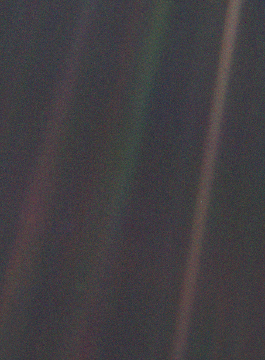
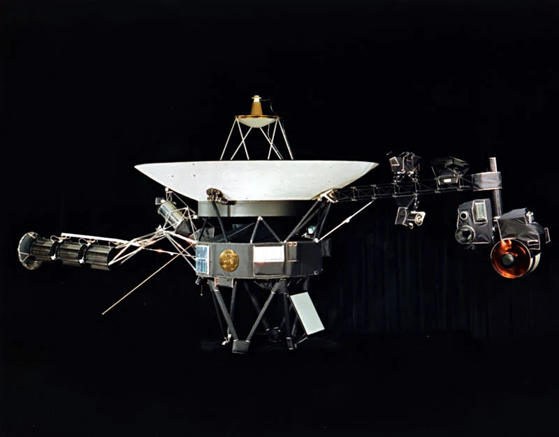
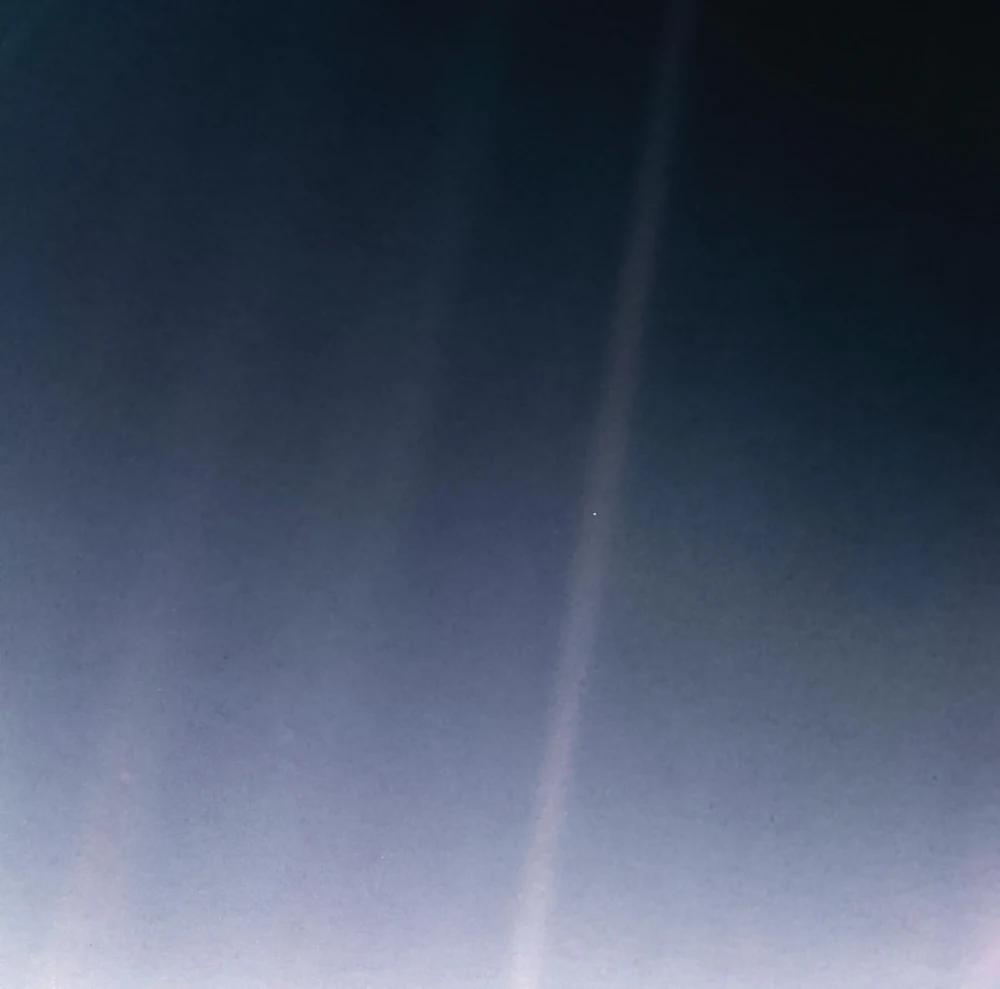

Pale Blue Dot is a photograph of Earth taken on , by the Voyager 1 space probe from a distance of over 6 billion kilometers (3.7 billion miles, 40.5 astronomical units), as part of that day's Family Portrait series of images of the Solar System.
In the photograph, Earth's apparent size is less than a pixel. The planet appears as a tiny dot against the vastness of space, among bands of sunlight reflected by the camera. Commissioned by NASA and resulting from the advocacy of astronomer and author Carl Sagan, the photograph was interpreted in Sagan's 1994 book, Pale Blue Dot, as representing humanity's small and temporary place in the cosmos.

{kind=link}
Voyager 1 was launched on September 5, 1977, with the initial purpose of studying the outer Solar System. After fulfilling its primary mission, the decision was made to turn its camera around and capture one last image of Earth, in part due to Sagan's proposal.
Over the years, the photograph has been revisited and celebrated on multiple occasions, with NASA acknowledging its anniversaries and presenting updated versions that improve its clarity and detail.
Background
Voyager 1 is a 722-kilogram (1,592-pound) robotic spacecraft sent to study the outer Solar System and eventually interstellar space. After encountering the Jupiter system in 1979 and the Saturn system in 1980, its primary mission was declared complete in November 1980. Voyager 1 provided detailed images of the two largest planets and their major moons.
Its mission was extended to investigate the boundaries of the heliosphere and interstellar space. Communications between the spacecraft and Earth use NASA's Deep Space Network.

{kind=link}
Voyager 1 was originally expected to communicate only through its Saturn encounter. When the spacecraft passed the planet in 1980, Sagan proposed that it take one last picture of Earth. He acknowledged that such a picture would not have much scientific value, as Earth would appear too small for Voyager's cameras to make out any detail, but it would offer a perspective on humanity's place in the universe.
Many in NASA's Voyager program were already supportive of the idea. Unaware of Sagan's proposal, University of Arizona planetary scientist Carolyn Porco had a similar idea after becoming a member of the program in 1983, and had been asking about its possibility as early as 1985. However, there were concerns that taking a picture of Earth so close to the Sun risked damaging the spacecraft's imaging system.
It was not until 1989 that the idea was put in motion. Instrument calibrations delayed the operation further, and the personnel who devised and transmitted the radio commands to Voyager 1 were being laid off or transferred to other projects. Richard Truly, then the NASA Administrator, intervened to ensure that the photograph was taken. A proposal to continue photographing Earth as it orbited the Sun was rejected.
Camera
Voyager 1's Imaging Science Subsystem consists of two cameras: a low-resolution wide-angle camera used for imaging larger areas, and a high-resolution narrow-angle camera intended for detailed imaging of specific targets. Both cameras use slow-scan vidicon tubes with a selenium sulphur storage surface, and have eight colored filters mounted on a filter wheel in front of the tube.
Pale Blue Dot was taken with the narrow-angle camera, a 1500 mm f/8.5 catadioptric Cassegrain telescope whose design was based on the 1973 Mariner mission.
As the mission progressed, the objects to be photographed were farther away and appeared fainter. This required longer exposures and slewing, or panning, of the cameras to achieve acceptable quality. The telecommunication capability also diminished with distance, limiting the number of data modes that could be used by the imaging system.
After taking the Family Portrait series of images, which included Pale Blue Dot, NASA mission managers commanded Voyager 1 to power its cameras down. The spacecraft was not going to fly near another imaging target, while other instruments still collecting data needed power for the long journey to interstellar space.
Photograph
The command sequence sent to the spacecraft and the calculations for each photograph's exposure time were developed by Porco and space scientist Candy Hansen of NASA's Jet Propulsion Laboratory. The sequence was then compiled and sent to Voyager 1, with the images taken at 04:48 GMT on February 14, 1990. At that time, the distance between the spacecraft and Earth was 40.47 astronomical units, or about 6.055 billion kilometers.
The data from the camera was stored initially in an onboard tape recorder. Transmission to Earth was delayed by the Magellan and Galileo missions being given priority use of the Deep Space Network. Between March and May 1990, Voyager 1 returned 60 frames to Earth, with each radio signal traveling at the speed of light for nearly five and a half hours to cover the distance.
Three of the frames received showed Earth as a tiny point of light in empty space. Each frame had been taken using a different color filter: blue, green, and violet, with exposure times of 0.72, 0.48, and 0.72 seconds respectively. The three frames were then recombined to produce the image that became Pale Blue Dot.
Of the 640,000 individual pixels that compose each frame, Earth takes up less than one: 0.12 of a pixel, according to NASA. The light bands across the photograph are an artifact caused by sunlight reflecting off parts of the camera and its sunshade, due to the apparent proximity of the Sun and Earth. Voyager's viewpoint was approximately 32 degrees above the ecliptic, the plane of Earth's orbit around the Sun.
Detailed analysis suggested that the camera also detected the Moon, although it is too faint to be visible without special processing.
Pale Blue Dot was also published as part of a composite picture created from a wide-angle photograph showing the Sun and the region of space containing Earth and Venus. The wide-angle image was inset with two narrow-angle pictures: Pale Blue Dot and a similar photograph of Venus.
The wide-angle photograph was taken with the darkest filter, a methane absorption band, and the shortest possible exposure of 5 milliseconds to avoid saturating the camera's vidicon tube with scattered sunlight. Even so, the result was a bright, burned-out image with multiple reflections from the camera's optics. The Sun appears far larger than its actual angular size. The rays around it are a diffraction pattern from the calibration lamp mounted in front of the wide-angle lens.
Pale blue color
Earth appears as a blue dot primarily because of Rayleigh scattering of sunlight in its atmosphere. In Earth's air, short-wavelength visible light, such as blue light, is scattered more than longer-wavelength light, such as red light. This is also why the sky appears blue from Earth.
The ocean contributes to Earth's blueness, but to a lesser degree than atmospheric scattering. Earth is a pale blue dot, rather than dark blue, because white light reflected by clouds combines with the scattered blue light.
Earth's reflectance spectrum, from the far-ultraviolet to the near-infrared, is influenced by life. Rayleigh scattering is enhanced in an atmosphere that does not substantially absorb visible light. This differs from the orange-brown appearance of Titan, where organic haze particles strongly absorb blue visible light.
Earth's plentiful atmospheric oxygen, produced by photosynthetic life, oxidizes organic compounds in the atmosphere and converts them to water and carbon dioxide. This helps make the atmosphere transparent to visible light, allowing substantial Rayleigh scattering and stronger reflection of blue light.
Reflections
In his 1994 book, Pale Blue Dot, Carl Sagan reflects on the photograph's significance. He connects the tiny point in the image to all of human history and to the lives of everyone who has lived on Earth.
“That's here. That's home. That's us.”
Carl Sagan, Pale Blue Dot (1994)
Sagan uses this distant view to question humanity's sense of importance and the conflicts over territory that seem so small from space. His reflection ends by urging people to treat one another more kindly and protect the planet that supports them.
Anniversaries
In 2015, NASA acknowledged the photograph's 25th anniversary. Voyager project scientist Ed Stone described its continuing ability to inspire people to think about Earth as their home.
In 2020, for the image's 30th anniversary, NASA published a new version of the original Voyager photo, Pale Blue Dot Revisited, using modern image processing techniques while respecting the original data and the intentions of the people who planned the images.

{kind=link}
Brightness levels and colors were rebalanced to enhance the area containing Earth, and the image was enlarged. It appears brighter and less grainy than the original. The Sun is toward the bottom of the image, where it is brightest.
To celebrate the same anniversary, the Carl Sagan Institute released a video with several astronomers reciting Sagan's Pale Blue Dot reflection.
Sources and credits
Adapted from “Pale Blue Dot” on Wikipedia by Wikipedia contributors. Article version used · Contributor history.
The article text has been lightly edited and its longer quotations summarized. Adapted text is available under Creative Commons Attribution-ShareAlike 4.0. The short Carl Sagan quotation is credited separately. Images were downloaded from the article's Wikimedia Commons files and optimized for this page; their individual credits and licensing information are linked in the captions.
NASA also provides a Pale Blue Dot image download and description.